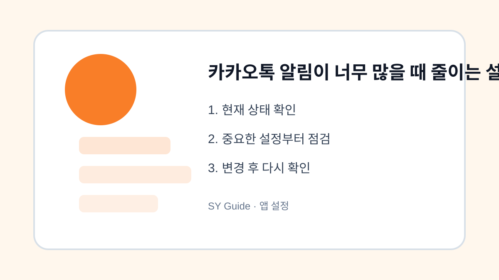

카카오톡 알림이 너무 많을 때 줄이는 설정 순서
카카오톡 알림이 계속 울릴 때 전체 알림, 대화방별 알림, 키워드 알림, 방해금지 시간을 차례대로 정리하는 방법입니다.

카카오톡은 가족, 회사, 모임, 쇼핑 채널까지 한곳에 모이다 보니 알림이 쉽게 많아집니다. 알림을 모두 꺼버리면 중요한 연락을 놓칠 수 있고, 그대로 두면 집중하기 어렵습니다. 그래서 전체 알림을 끄기보다 어떤 알림이 필요한지 구분한 뒤 단계적으로 줄이는 방식이 좋습니다.
전체 알림부터 바로 끄지 않기
가장 먼저 확인할 것은 스마트폰 설정의 앱 알림과 카카오톡 내부 알림입니다. 둘 중 하나가 꺼져 있으면 필요한 알림도 오지 않을 수 있습니다. 반대로 둘 다 모두 켜져 있으면 소리, 진동, 배지 숫자가 과하게 느껴질 수 있습니다. 우선 전체 알림은 유지하고 세부 항목을 줄이는 방식으로 시작하세요.
대화방별 알림을 나누기
알림 피로의 큰 원인은 단체방입니다. 자주 확인하지 않아도 되는 방은 대화방 상단 메뉴에서 알림을 끌 수 있습니다. 회사나 가족처럼 꼭 필요한 방은 켜두고, 이벤트성 방이나 오래된 모임방은 끄는 식으로 나누면 중요한 연락은 유지하면서 알림 수를 줄일 수 있습니다.
채널 알림과 광고성 메시지 정리하기
브랜드 채널을 많이 추가해두면 할인, 이벤트, 쿠폰 메시지가 계속 도착합니다. 필요한 채널만 남기고 사용하지 않는 채널은 차단하거나 알림을 끄는 편이 좋습니다. 단, 실제 주문 알림이나 예약 알림을 받는 채널은 삭제하기 전에 최근 메시지 내용을 확인하세요.
| 알림 종류 | 권장 처리 | 주의점 |
|---|---|---|
| 가족/업무방 | 유지 | 소리만 줄일 수 있음 |
| 오래된 단체방 | 방별 알림 끄기 | 멘션 확인 필요 |
| 쇼핑 채널 | 채널 알림 끄기 | 주문 알림 채널 확인 |
| 야간 알림 | 방해금지 시간 활용 | 긴급 연락 예외 설정 |
앱 설정을 바꾸기 전 마지막 점검
- 전체 알림을 끄기 전 대화방별 알림부터 정리하기
- 필요 없는 채널과 광고성 메시지 확인하기
- 중요한 대화방은 알림음만 조정하기
- 야간에는 방해금지 시간을 활용하기
- 정리 후 하루 정도 실제 알림 흐름 확인하기
알림은 한 번에 완벽히 정리하기 어렵습니다. 하루 정도 사용해보고 놓친 연락이 없다면 설정을 유지하고, 너무 조용해졌다면 중요한 방만 다시 켜면 됩니다. 핵심은 모두 켜거나 모두 끄는 것이 아니라 생활에 맞게 층을 나누는 것입니다.
카카오톡 알림을 정리해야 하는 상황
단체방이 많아지면 중요한 개인 메시지와 광고성 알림이 섞입니다. 전체 알림을 끄기보다 대화방별 알림, 키워드 알림, 방해금지 시간을 나눠 조정하면 필요한 연락은 놓치지 않을 수 있습니다.
카카오톡 알림 설정에서 흔한 실수
모든 알림을 꺼두면 인증, 가족 연락, 업무 메시지까지 늦게 볼 수 있습니다. 자주 쓰는 방과 조용히 볼 방을 구분하고, 배지와 소리 설정을 따로 확인하는 것이 좋습니다.
카카오톡 알림 설정 관련 설정을 먼저 확인해야 하는 이유
카카오톡 알림 설정 관련 설정은 단순히 메뉴 하나를 켜고 끄는 문제가 아니라, 실제 사용 흐름에서 어떤 불편을 줄이려는지 먼저 정해야 합니다. 같은 메뉴라도 기기 제조사, 운영체제 버전, 앱 업데이트 상태에 따라 이름이 달라질 수 있으므로 현재 화면을 기준으로 차근차근 확인하는 것이 좋습니다.
카카오톡 알림 설정에서 자주 생기는 실수
카카오톡 알림을 정리해야 하는 상황을 정리할 때는 되돌리기 어려운 삭제나 계정 변경을 마지막 단계로 미루는 것이 좋습니다. 먼저 표시, 알림, 권한처럼 쉽게 복구할 수 있는 항목부터 확인하면 실수 부담을 줄일 수 있습니다.
카카오톡 알림 설정 점검 후 다시 볼 부분
카카오톡 알림을 정리해야 하는 상황은 사용자마다 필요한 범위가 다르기 때문에, 자주 쓰는 앱과 계정부터 적용하는 편이 좋습니다. 바꾸기 전 화면과 바꾼 뒤 결과를 비교하면 어떤 설정이 실제로 도움이 됐는지 판단하기 쉽습니다.